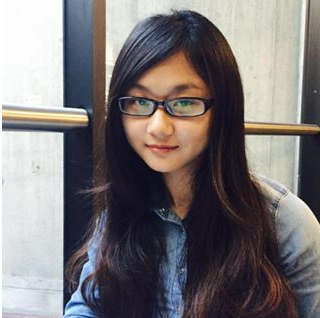

About
Rong Ivy Sui spent the first eighteen years of her life in Urumqi, China. It’s a region in Northwest China where different ethnic groups and religions coexist. Different architectural styles, complex decorations and colorful handicrafts raise her interest in art. She studied Horticulture and Landscape Architecture in Yangzhou University, and Landscape Architecture in Academy of Art University. She works on many project styles, from alley improvement to greenway design.
Education
Academy of Art University, 2015-2017
Master of Arts in Landscape Architecture
Yangzhou University, 2010-2017
Bachelor of Agriculture in Urban Landscape Planning and Designing